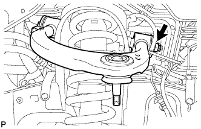
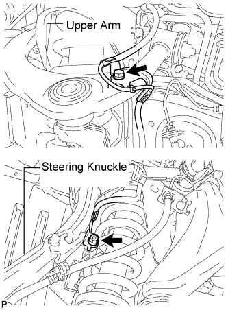
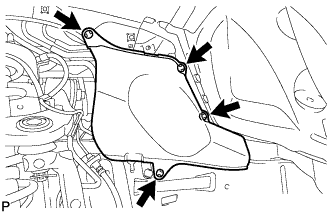
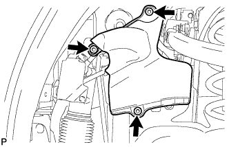
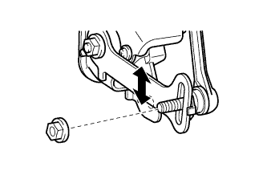

FRONT UPPER SUSPENSION ARM > INSTALLATION |
| 1. TEMPORARILY INSTALL FRONT SUSPENSION UPPER ARM ASSEMBLY LH |
 |
Temporarily install the suspension upper arm with the 2 washers, bolt and nut.
| 2. CONNECT STEERING KNUCKLE LH |
Connect the steering knuckle to the suspension upper arm.
Install the nut and a new cotter pin.
| 3. CONNECT SKID CONTROL SENSOR WIRE |
 |
Connect the sensor wire to the steering knuckle and upper arm with the bolt and nut.
| 4. STABILIZE SUSPENSION |
Install the front wheels.
Lower the vehicle.
Press down on the vehicle several times to stabilize the suspension.
| 5. TIGHTEN FRONT SUSPENSION UPPER ARM ASSEMBLY LH |
Tighten the nut.
| 6. INSTALL FRONT HEIGHT CONTROL SENSOR SUB-ASSEMBLY LH (w/ Active Height Control) |
 |
Install the sensor with the bolt and nut.
Connect the connector.
| 7. INSTALL FRONT FENDER APRON SEAL REAR LH |
 |
Install the apron seal with the 4 clips.
| 8. INSTALL FRONT FENDER APRON SEAL LH (w/ KDSS) |
 |
Install the apron seal with the 3 clips.
| 9. INSTALL FRONT FENDER APRON SEAL LH (w/o KDSS) |
 |
Install the apron seal with the 4 clips.
| 10. CONNECT CABLE TO NEGATIVE BATTERY TERMINAL (w/ Active Height Control) |
| 11. PERFORM VEHICLE HEIGHT OFFSET CALIBRATION (w/ Active Height Control) |
Perform the vehicle height offset calibration (Click here).
| 12. ADJUST FRONT HEIGHT CONTROL SENSOR SUB-ASSEMBLY LH (w/ Active Height Control) |
 |
Loosen the nut and adjust the link installation position by moving the height control sensor link up or down in the long hole of the bracket.
Tighten the nut of the height control sensor link.
| 13. PERFORM ZERO POINT CALIBRATION OF G SENSOR (w/ Active Height Control) |
Perform the zero point calibration of G sensor (Click here ).
| 14. MEASURE VEHICLE HEIGHT (w/ KDSS) |
Set the tire pressure to the specified value(s) (Click here).
Bounce the vehicle to stabilize the suspension.
 |
Measure the distance from the ground to the top of the bumper and calculate the difference in the vehicle height between left and right. Perform this procedure for both the front and rear wheels.
| 15. CLOSE STABILIZER CONTROL WITH ACCUMULATOR HOUSING SHUTTER VALVE (w/ KDSS) |
Using a 5 mm hexagon socket wrench, tighten the lower and upper chamber shutter valves of the stabilizer control with accumulator housing.
| 16. INSTALL STABILIZER CONTROL VALVE PROTECTOR (w/ KDSS) |
 |
Install the valve protector with the 3 bolts.
Attach the clamp, and connect the connector to the valve protector.
| 17. ADJUST HEADLIGHT ASSEMBLY |
for Standard:
Adjust the headlight (Click here).
for HID Headlight:
Adjust the headlight (Click here).